| Gc(r) | = | 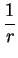 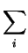 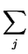 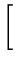 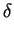 (r - rij)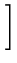 - 4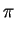 r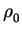 |
|
| = | 4r[ |
(1.1) |
As suggested by its name, the atomic pair distribution function (PDF),
G(r), tells the probability of finding atomic pairs separated by the
real space distance r. It should be stressed that the PDF of
interest is radially averaged and is a one dimensional function. To
obtain the G(r) for a given a structure, we first sit on one atom i,
then look out for neighbors. A peak is assigned for every atom j
found at the position corresponding to the inter-atomic distance
rij, and zero everywhere else. Then we repeat the same procedure
over all atoms, and average all obtained curves to get the total G(r) of the structure. Another way to get the G(r) is to first obtain the
atomic radial density function
n( 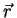
| Gc(r) | = |      (r - rij) - 4 r |
|
| = | 4r[ |
(1.1) |
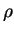
(r) here is equivalent to the spherical average of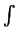
n(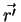
) . n( - )d. Though less intuitive than the radial density function n(), the PDF, G(r), is the directly measurable quantity from powder diffraction experiments.
The path from a powder diffraction experiment to the G(r) can be
conceptually understood in the following way. We will first
concentrate on one single grain, then do the spherical
averaging. Given the radial density function
n() of the
scatterer, from the kinematic scattering theory in the Born
approximation, the scattered wave at momentum transfer 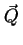 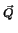 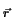
|
S(Q) = 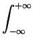 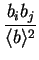 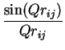 d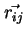 =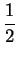 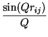 drij |
(1.2) |
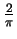
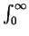
Q[S(Q) - 1]sin QrdQ.The key difference between the PDF method and conventional average structure analysis of powder diffraction data is how to treat the diffuse scattering intensities in-between and underneath the Bragg peaks. The Bragg peaks come from the long range ordered structure, while the diffuse scattering intensities come from local/temporal deviations from the long range ordered structure. The PDF technique takes into account both, as evident from the equations above, while conventional average structure analysis only looks at the Bragg peaks. Therefore, the PDF method is capable of probing both the local and average structure. This combination of local and average studies from the same scattering data represents a clear advantage for a wide range of applications. For example, with the presence of Bragg peaks in the case of crystalline materials, the PDF technique and conventional analysis are complementary while the former provides additional information about the local structure. However, in the case of nano-crystalline and non-crystalline materials, with few or no Bragg peaks, only the PDF technique is applicable.
Local structural information is intuitively contained in the low-r
PDF peaks. Thus, the real space resolution is an important
experimental factor to resolve closely neighboring peaks. PDF peaks
are first broadened by the atomic thermal motions. Second, the finite
measurement range also broadens the peaks coming from the termination
effects [10]. High real space resolution requires usually
extended Q range ( 25.0 Å-1) data to be collected, and low
temperatures if possible. Other than identifying low-r peak
positions (existing atomic pair distances), extracting the peak width
and area reveals further details about the local distortions and
number of neighboring atoms as well. The average structural
information is usually recovered from the PDF structure model
refinements using the non-linear least square regression fitting
program PDFFIT [11]. The agreement between the average
structure and experimental G(r) provides a good check for the possible
existence of local disorder, and hypothetical distorted structure
models can then be fit to improve the agreement. Knowledge of the
detailed local and average structures often serves as the basis of
many theoretical calculations of material properties. For example, the
bond valence sum can be computed to investigate the strength of
chemical bondings. Electronic band structure calculations can be
carried out if necessary to check whether the obtained structure gives
macroscopic properties consistent with other types of
measurements. For more details about the PDF technique, please turn to
a recent book by Egami and Billinge [5].
25.0 Å-1) data to be collected, and low
temperatures if possible. Other than identifying low-r peak
positions (existing atomic pair distances), extracting the peak width
and area reveals further details about the local distortions and
number of neighboring atoms as well. The average structural
information is usually recovered from the PDF structure model
refinements using the non-linear least square regression fitting
program PDFFIT [11]. The agreement between the average
structure and experimental G(r) provides a good check for the possible
existence of local disorder, and hypothetical distorted structure
models can then be fit to improve the agreement. Knowledge of the
detailed local and average structures often serves as the basis of
many theoretical calculations of material properties. For example, the
bond valence sum can be computed to investigate the strength of
chemical bondings. Electronic band structure calculations can be
carried out if necessary to check whether the obtained structure gives
macroscopic properties consistent with other types of
measurements. For more details about the PDF technique, please turn to
a recent book by Egami and Billinge [5].